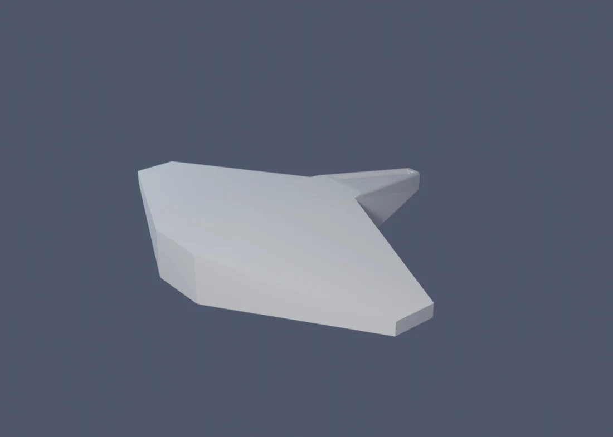
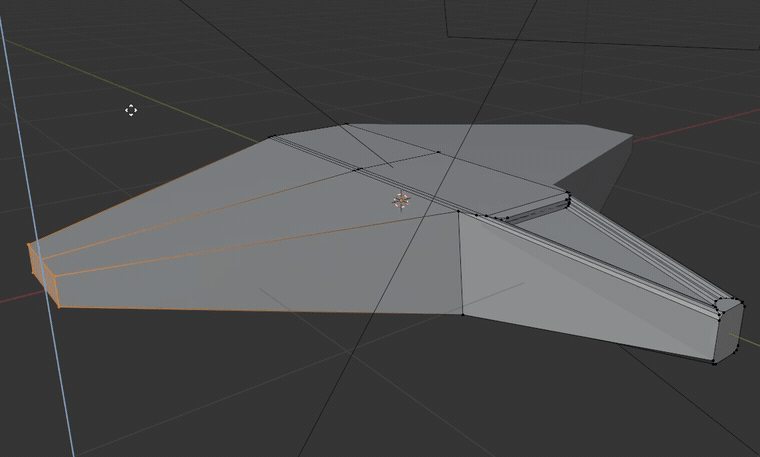

// Блок 1 з 10 · занять 2–3
Перший об’єкт за одне заняття
П’ять інструментів, дзеркальна симетрія й колір по гранях — без UV-розгортки.
- Тривалість
- 2 занять · ~2 год кожне
- Чекпоінт
- Закінчений кольоровий симетричний об’єкт — перший «показний» результат року.
- Виклик
- Другий об’єкт складнішої симетрії або палітра під настрій («іржавий метал» проти «неонової іграшки»).
#Ідея блоку
На вступному занятті ти вже зробив дві речі: назвав, що хочеш навчитися робити, і склав грубий силует цієї ідеї з примітивів. Блок 1 — міст від «купи кубів і куль» до першого об’єкта, який справді хочеться показати: кольорового, з деталями, зробленого за один вечір.
Прийом запозичено з практики блокаутів для ігрових асетів (канал Imphenzia): п’ять інструментів + модифікатор Mirror + колір по гранях без UV-розгортки. Це не випадково мінімальний набір: саме ці п’ять дій покривають майже все, що новачку потрібно для блокауту, а відсутність UV-розгортки прибирає крок, на якому зазвичай застрягають усі. Ти одразу бачиш кольоровий результат, а не сіру заготовку.
Ключова навичка блоку — розпізнавати потрібний інструмент за формою задачі, а не шукати навмання в меню.


#Заняття 2 — п’ять інструментів
Візьми свій силует із вступного заняття (або, якщо ідея змінилася, починай новий блокаут — на це піде кілька хвилин).
| Інструмент | Що робить | Приклад |
|---|---|---|
| Extrude E | витягує грань чи ребро в нову геометрію | витягнути ніс корабля з куба-заготовки |
| Inset I | вставляє меншу грань усередину обраної | вставка під ілюмінатор перед тим, як його «вдавити» |
| Bevel Ctrl+B | скошує гостре ребро, прибирає «пластиковий» вигляд | скруглити кути корпусу |
| Loop Cut Ctrl+R | додає петлю ребер упоперек форми | розрізати крило, щоб потім витягнути елерон |
| Mirror (модифікатор) | дзеркалить половину відносно осі | вмикається першим — і про нього забуваєш |
#Кожен інструмент трохи ближче
- Extrude (E). Після натискання рухай мишею — витягування піде вздовж нормалі грані (найчастіше саме це й потрібно). Щоб обмежити рух однією віссю, натисни ще й X, Y чи Z одразу після E. Якщо гізмо зі стрілками не з'явилось — перевір, що ти в Edit Mode, а не в Object Mode: там E на сітку не подіє.
- Inset (I). Новий контур завжди трохи менший і лежить строго в площині оригінальної грані. Наступний E на щойно вставленій грані піде рівно за нормаллю — тому Inset і ставлять ПЕРЕД Extrude, а не замість нього.
- Bevel (Ctrl+B). Тягни мишею, щоб задати ширину скосу; колесо миші під час перетягування додає сегменти (кут стає заокругленим, а не просто зрізаним навскіс). Для більшості блокаутів досить 1–2 сегментів — цього вже достатньо, щоб прибрати «гостроту».
- Loop Cut (Ctrl+R). Спершу просто поводь мишею над формою — жовта попередня лінія сама «намагається» лягти рівною петлею навколо об'єкта. Один клік фіксує кількість і напрямок, другий клік (чи Esc) лишає петлю точно посередині, не зсуваючи її вбік.
- Mirror. Шукай у Modifier Properties (іконка гайкового ключа на панелі справа) → Add Modifier → Generate → Mirror. Вісь за замовчуванням — X, і для переважної більшості блокаутів («ліво-право») саме вона й потрібна; вісі Y чи Z знадобляться лише для інших видів симетрії (наприклад, «перед-зад»).
#Приклад ходу роботи (не завдання — один можливий шлях)
Це не те, що тобі треба зробити: об'єкт обираєш сам, і приклад нижче — не про конкретну форму, а про послідовність дій. Щоб побачити, як усі п'ять інструментів працюють разом, ось наскрізний приклад на нейтральному об'єкті — невеликому космічному кораблі.
- Заготовка. Add → Mesh → Cube. У Edit Mode розтягни його вздовж однієї осі (S → вісь → число): куб стає видовженим бруском — майбутнім фюзеляжем.
- Mirror одразу. Ще до будь-якої деталізації додай модифікатор Mirror (вісь X, за замовчуванням). Поки нічого візуально не зміниться — і це нормально: дзеркалити поки що нічого.
- Ніс — Extrude. Виділи передню грань бруска, E витягни вперед, потім S зменши щойно витягнуту грань — виходить звужений ніс.
- Крило — Extrude, і тут Mirror оживає. Виділи бічну грань з одного боку (+X), E витягни вбік. Друге крило з'явиться саме на очах, із протилежного боку, — це і є момент, заради якого Mirror вмикали першим, ще до деталізації.
- Ілюмінатор — Inset. На верхній грані ближче до носа: I створює меншу вставлену грань. За бажання — ще один невеликий E усередину, щоб позначити заглиблення.
- Скруглити корпус — Bevel. Виділи довгі поздовжні ребра фюзеляжу, Ctrl+B, потягни — гострі кути стають м'якшими.
- Панельна лінія — Loop Cut. Ctrl+R упоперек фюзеляжу приблизно посередині — петля, яку згодом можна використати як межу відкидного люка (задум наперед на Блок 2).
Результат — упізнаваний силует корабля, зроблений рівно тими самими п'ятьма діями, що й у таблиці вище. Онови кожен крок під свою ідею: замість корабля може бути машина, істота чи будівля — послідовність дій та сама.

Порядок роботи, який добре працює:
- Спочатку ввімкни Mirror (якщо об’єкт ще не симетричний — перевір це зараз, це найдешевше виправити на старті). Далі редагуй лише одну половину: друга сама повторює кожен рух.
- Extrude і Inset — додай виступи, що відрізняють силует від «просто куба»: кабіну, дуло, вухо, вежу.
- Bevel — пройдися по гострих кутах наприкінці, коли форма вже влаштовує.
- Loop Cut — додай 1–2 петлі там, де потрібна деталь усередині великої площини. Не більше: це блокаут, а не фінальна модель.
#Заняття 3 — колір без малювання
У «дорослому» процесі тут була б окрема, нудна стадія: розгорнути модель у плоску викройку, як шкурку яблука, й малювати текстуру на ній. Сьогодні ми цю стадію пропускаємо повністю. Красиве не завжди означає складне.
Два способи, обидва без жодного кліка по UV-розгортці:
- Матеріал по гранях. У Edit Mode виділи потрібні грані (режим виділення граней — третя іконка зверху зліва або 3) → у панелі Properties справа відкрий вкладку Material (іконка кульки в шаховому візерунку) → New → одразу перейменуй матеріал (звичка, яка ще стане в пригоді в Блок 7) → зміни Base Color → натисни Assign. Якщо кнопка Assign неактивна — ти ще не в Edit Mode або не виділено жодної грані.
- Vertex Paint. Перемкни режим у випадному списку вгорі зліва (там, де зазвичай Object Mode/Edit Mode) на Vertex Paint, обери колір пензля зліва й малюй прямо по вершинах. Швидше для органічних плавних переходів кольору; Assign по гранях — точніше для чітких меж між кольоровими ділянками.
Щоб бачити колір у в’юпорті, перемкни відображення на Material Preview (кнопка-кулька вгорі праворуч).
Принцип палітри: 4–6 кольорів на весь об’єкт — це вже достатньо. Менше — і об’єкт монотонний, більше — важко тримати цілісність. Контраст між сусідніми гранями важливіший за кількість відтінків. І правило «одна деталь — один колір»: не змішуй відтінки в межах однієї функціональної частини.
#Приклад палітри (той самий корабель)
Продовжимо приклад із заняття 2. П'ять функціональних частин — п'ять кольорів:
- корпус — світло-сірий: нейтральна база, займає найбільшу площу;
- ніс — трохи темніший сірий: виділяє форму, не сперечаючись із базою;
- крила — той самий сірий, що й корпус, чи на тон холодніший: крила продовжують корпус, а не заявляють нову ідею;
- ілюмінатор — контрастний холодний акцент (наприклад, блакитний): єдина по-справжньому «кольорова» деталь, і тому саме вона одразу притягує погляд;
- панельна лінія з Loop Cut — тонка темна смуга вздовж петлі: необов'язково, але добре показує, що петля не лише технічна, а й «прочитується» на силуеті.
Це і є правило «контраст важливіший за кількість відтінків» на практиці: чотири з п'яти кольорів — варіації одного нейтрального сірого, і лише один по-справжньому контрастний. Око одразу читає, де в об'єкта головна деталь. (Результат — те саме фото «після» на початку сторінки.)
#Типові проблеми
| Проблема | Чому так сталося | Рішення |
|---|---|---|
| Mirror не дає симетрії: друга половина з’являється не там або взагалі не з’являється | Об’єкт не відцентрований відносно origin або в модифікаторі обрано не ту вісь (X/Y/Z) | Object → Set Origin → Origin to Geometry, потім перевір вісь у самому модифікаторі Mirror |
| Після Extrude/Inset частина форми «провалюється» чи вивернута навиворіт | Витягнуто чи вставлено в неправильному напрямку | Скасуй (Ctrl+Z) і повтори, стежачи за напрямком синьої стрілки-гізмо перед підтвердженням |
| Призначений колір грані не з’являється у в’юпорті | В’юпорт у режимі Solid, а не Material Preview, або грані не були виділені перед Assign | Перемкни в’юпорт на Material Preview; переконайся, що грані виділені перед натисканням Assign |
| Extrude / Inset / Bevel / Loop Cut не реагують, нічого не відбувається | Ти в Object Mode, а не в Edit Mode — ці інструменти працюють лише з геометрією всередині об'єкта | Натисни Tab, щоб зайти в Edit Mode, і переконайся, що щось виділено |
| Bevel непомітний або, навпаки, «з'їдає» всю грань | Amount замалий (непомітно) чи задовеликий відносно розміру грані (з'їдає сусідню геометрію) | Тягни повільніше й дивись на в'юпорт наживо; почни з малого Amount і збільшуй за потреби |
#Перед заняттям
- Blender 5.2 LTS встановлений (безкоштовний, працює на будь-якому ПК).
- Список гарячих клавіш п’яти інструментів (таблиця вище) — роздрукуй чи тримай перед очима: у перший раз не треба тримати їх у пам’яті.
- Записи про свою ідею з вступного заняття, якщо збереглися.
- Потренуйся у «Бачити Форму»: це розігріває око перед блокаутом.